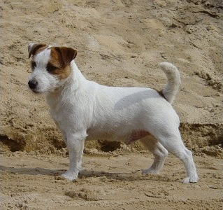
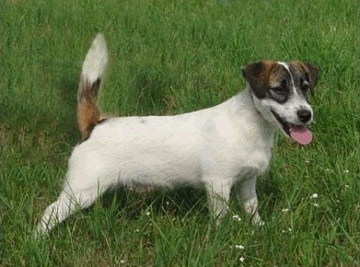
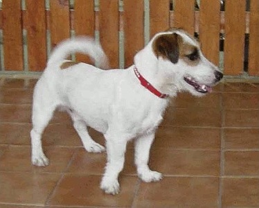
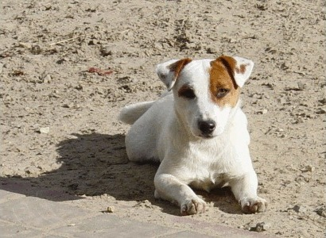
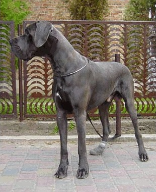
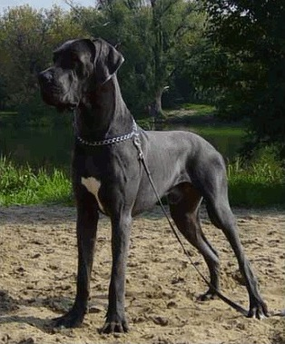
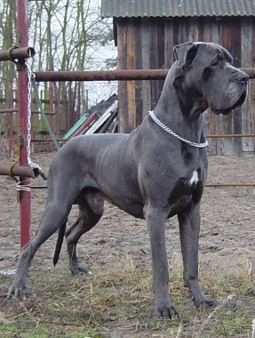
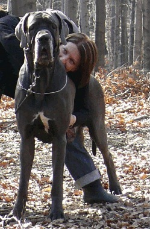

Hodowla Balao · Zakrzew koło Warki
Duże szwajcarskie psy pasterskie i Jack Russell teriery — hodowane z sercem, z rodowodami, w domu pełnym zwierząt.
Poznaj nasze psymiejsce na zdjęcia Waszych szwajcarów
Nasze obecne psy
Wielkie serce w wielkim ciele. Duży szwajcarski pies pasterski to siła i spokój w jednym — pies rodzinny w każdym calu: łagodny dla dzieci, oddany domownikom, czujny wobec obcych, ale nigdy agresywny.
Nasze obecne psy
Mały pies z wielkim temperamentem — inteligentny, odważny i niezmordowany towarzysz na każdą przygodę. Jacki towarzyszą Balao od lat: wychowują się w domu, wśród ludzi, koni i innych zwierząt, dzięki czemu są znakomicie zsocjalizowane.




Ponad dwie dekady hodowli
Balao to nie tylko psy, które są z nami dziś. Przez lata nasza hodowla wydała na świat dziesiątki wspaniałych psów, które trafiły do domów w Polsce i za granicą.
Apollo wśród psów. Nasze błękitne dogi zdobywały wystawy i serca — ogromne, dostojne, a przy tym niezwykle łagodne. Dziś to już historia hodowli, z której jesteśmy dumni.




Hodowaliśmy buldogi francuskie — pełne uroku, uparte i kochane pieski do towarzystwa. Ten rozdział również należy już do historii Balao.
Hodowla Balao
Interesuje Cię szczeniak z naszej hodowli albo chcesz po prostu porozmawiać o psach? Zadzwoń lub napisz.
601 237 375 ·
balao@balao.pl
Anna Pyziak · Zakrzew 24, 26-902 Grabów nad Pilicą